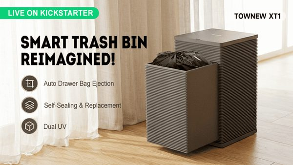
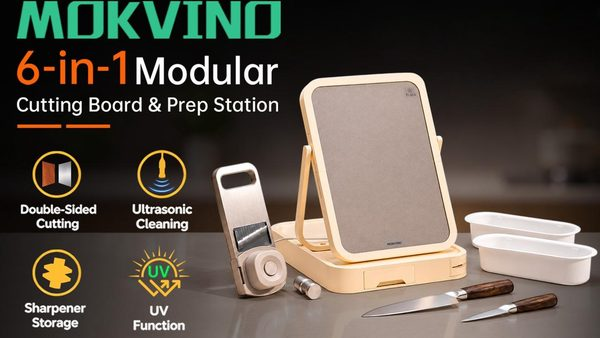

MAX ESPRESSO: Champion-Guided 3-in-1 Portable Coffee Machine
Champion-Guided |51mm Commercial Basket |Capsules & Fresh Grounds | 24-Bar Pump | Stable 92°C | Self-Heating | Full Accessory Kit MAX ESPRESSO is a 3-in-1 portable coffee machine for fresh grounds, Nespresso Original, and Dolce Gusto capsules. A 24-bar pump, stable 92°C brewing, self-heating system, and 51mm commercial basket deliver balanced espresso without an outlet, counter, or complicated set

Choice Capsule: A Physical Pause Before Every Decision
Two natural gemstone capsules, housed in a pocket-watch-inspired time box. A moment to pause, reflect, and choose. Constant notifications, rushed replies, and pressure-filled moments make thoughtful decisions harder. This pocket-sized ritual interrupts autopilot with a tactile pause: open the case, hold a gemstone, and let speed give way to reflection before answering texts, making plans, or choos

Arduview: the fully see-through retro game console
Clear tech from the 90s and 2000s is back. Shell, circuit board and screen are all see-through, not just the case. Arduview is a fully see-through retro game console with a transparent shell, circuit board, and screen. This pocket-size keychain handheld includes 300+ built-in games, a glowing cyan OLED display, USB-C loading, and compatibility with a huge community-built library for tinkering.

Thermodule: The World’s First Modular Heated Shoes
Swap batteries without taking them off. 1-second graphene heat plus full-system waterproofing. Your everyday tech winter shoes. Thermodule delivers modular heated shoes with graphene insoles, swappable collar batteries, and full-system waterproofing. Heat starts in 1 second, temperature adjusts with a simple press, and spare batteries keep warmth going without removing shoes or pulling out insoles

Townew Drawer: Auto Ejection & Self-Sealing Smart Trash Can
Motion-sensing Lid | One-touch Bag Sealing | Auto Trash Bag Replacement | Smart Drawer for Bag Easier Removal | Final Touch of Modern Home

MOKVINO: 6-in-1 Modular Cutting Board & Prep Station
Modular Prep Station | Hidden Knife Storage | UV Light | Built-In Sharpener Storage | Dual-Surface Cutting | Ultrasonic Cleaning MOKVINO is a 6-in-1 modular cutting board and prep station with dual surfaces, hidden magnetic knife storage, UV sterilization, built-in sharpener storage, expandable accessory space, and an ultrasonic cleaning basin. Designed to streamline prep, reduce mess, and keep es

Rownd 5X | True 5-Axis. Finally For Everybody
Simultaneous 5-axis CNC machining, a 2.2 kW spindle and 10-tool ISO20 ATC. Big possibilities. Desktop size. Rownd 5X delivers true simultaneous 5-axis CNC machining in a desktop footprint, powered by a 2.2 kW spindle and 10-tool ISO20 automatic tool changer. Built for creators who need complex parts, faster workflows, and production-grade capability without sacrificing precious workshop space.

Titaner Monolith: Titanium & Meteorite Lighter
Muonionalusta meteorite meets titanium, with a refined refillable core, copper heat sink, magnetic slider, and replaceable insert. Disposable lighters crack, run dry, or feel forgettable after a few uses. This refillable design solves that with durable titanium, a replaceable insert, reliable torch ignition, and a magnetic slider that feels precise. Meteorite shell detailing adds rarity to a tool

MOONCOAST: Turn Any Wall into an Interactive Playground
A touch-enabled home projector for interactive learning, creative drawing, family games, and entertainment. MOONCOAST is a touch-enabled home projector that transforms any wall into an interactive space for learning, drawing, music, games, and family entertainment. With a 40-120 inch display and easy keystone correction, it fits bedrooms, playrooms, and living rooms while delivering more value fro